القروض والأقساط والتوفير السنوي والإيجار وتكاليف التشغيل كلها دفعات تتكرر كل سنة. تستطيع نقل كل دفعة وحدها بقوانين الفصل الأول، لكن الحل يطول مع كل دفعة جديدة. في هذا الفصل تتعلم أربعة معاملات تنقل سلسلة دفعات متساوية بخطوة واحدة، ثم السلاسل التي تبدأ متأخرة، ثم الدفعات التي تزيد كل سنة بمقدار ثابت أو بنسبة ثابتة.
2.1 شكل السلسلة المتساوية
كل معاملات هذا الفصل مبنية على شكل واحد:
دفعات متساوية، قيمة كل منها A، في نهاية كل سنة من السنة 1 إلى السنة n.
القيمة الحالية P تقع في السنة 0، أي قبل الدفعة الأولى بسنة.
القيمة المستقبلية F تقع في السنة n، مع الدفعة الأخيرة.
احفظ هذا الشكل. أغلب أخطاء الطلاب في هذا الفصل سببها نسيان أين يضع كل معامل قيمته.
كيف وصلنا إلى معادلات هذا الفصل؟ الاشتقاق الكامل لكل معامل في ملحق اشتقاق المعادلات، Appendix B.
2.2 القسط السنوي لقرض
إذا اقترضت P اليوم وتريد سداده بدفعات سنوية متساوية لمدة n سنة، فالدفعة السنوية:
المعامل A/P يسمى معامل استرداد رأس المال. في Excel الدالة PMT تحسب القسط.
مثال 2.1: قسط قرض سنوي
اقترضت شركة 125,000 دينار بفائدة 5% سنويا، وتسدد القرض بدفعات سنوية متساوية لمدة 7 سنوات. ما القسط السنوي؟ وما مجموع الفوائد التي تدفعها؟
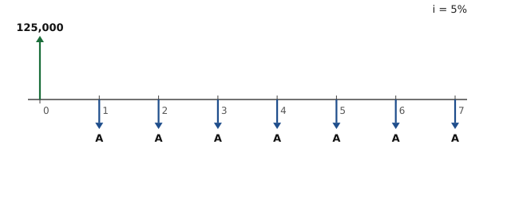
مخطط التدفق النقدي
الحل:
القرض في السنة 0، والأقساط من السنة 1 إلى السنة 7. نطبق معامل استرداد رأس المال:
بالجداول نحسب المعامل من جدول P/A في الملحق، لأن المعاملين مقلوبان لبعضهما. المعامل المقرب يعطي 21,600.00 دينار.
في Excel:
=PMT(5%, 7, -125000)
في Python:
import numpy_financial as npfprint(round(npf.pmt(0.05, 7, -125000), 2)) # 21602.48
مجموع الأقساط 151,217.34 دينار، منها 26,217.34 دينار فوائد.
كل قسط يسدد جزءا من الفائدة وجزءا من أصل القرض. الجدول الذي يبين ذلك سنة بسنة يسمى جدول إطفاء القرض.
مثال 2.2: جدول إطفاء القرض
قرض 30,000 دينار بفائدة 8% يسدد بخمسة أقساط سنوية متساوية. اكتب جدول إطفاء القرض: الفائدة وسداد الأصل والرصيد في كل سنة.
الحل:
القسط السنوي:
فائدة كل سنة تساوي النسبة مضروبة في الرصيد في بداية السنة، والباقي من القسط يسدد من أصل القرض:
السنة
القسط
الفائدة
سداد الأصل
الرصيد في نهاية السنة
0
30,000.00
1
7,513.69
2,400.00
5,113.69
24,886.31
2
7,513.69
1,990.90
5,522.79
19,363.52
3
7,513.69
1,549.08
5,964.61
13,398.90
4
7,513.69
1,071.91
6,441.78
6,957.12
5
7,513.69
556.57
6,957.12
0.00
الفائدة تقل كل سنة لأن الرصيد يقل، وسداد الأصل يزيد بنفس المقدار. في Excel الدالة IPMT تعطي فائدة السنة k، والدالة PPMT تعطي سداد الأصل فيها:
=IPMT(8%, k, 5, -30000)
=PPMT(8%, k, 5, -30000)
2.3 القيمة الحالية لسلسلة دفعات
هذا عكس القسط: تعرف الدفعة السنوية وتريد قيمتها اليوم.
عرض على شخص شراء سيارة بأقساط 1,203 دينار سنويا لمدة 9 سنوات. ما سعر السيارة نقدا اليوم إذا كانت الفائدة على تمويل السيارات 12% سنويا؟
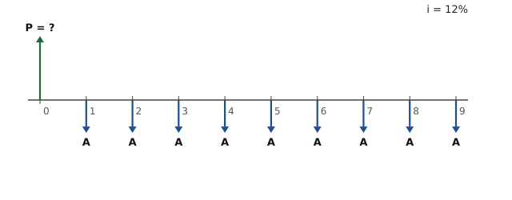
مخطط التدفق النقدي
الحل:
المجهول هو القيمة الحالية لسلسلة الأقساط:
بالمعامل المقرب لأربع خانات يكون الجواب 6,409.82 دينار.
في Excel:
=PV(12%, 9, -1203)
سعر السيارة نقدا 6,409.88 دينار. مجموع الأقساط 10,827.00 دينار، والفرق ثمن التأجيل.
مثال 2.4: دفعة أولى وأقساط
عرض لشراء سيارة: دفعة أولى 12,000 دينار اليوم، ثم 5,000 دينار سنويا لمدة 5 سنوات. ما سعر السيارة نقدا إذا كانت الفائدة 12%؟
الحل:
الدفعة الأولى في السنة 0 لا تحتاج نقلا. الأقساط تنقل بالمعامل P/A:
في Excel:
=12000 + PV(12%, 5, -5000)
السعر النقدي 30,023.88 دينار.
مثال 2.5: أعلى سعر لآلة توفر تكاليف
آلة جديدة توفر على مصنع 8,000 دينار سنويا لمدة 6 سنوات. ما أعلى سعر يدفعه المصنع للآلة اليوم إذا كان الحد الأدنى للعائد 12%؟
الحل:
الآلة تستحق سعرها إذا كانت القيمة الحالية للتوفير لا تقل عنه:
أعلى سعر 32,891.26 دينار. إذا كان السعر أعلى، فالمصنع يحقق عائدا أقل من 12%.
2.4 القيمة المستقبلية لسلسلة دفعات
إذا أودعت A في نهاية كل سنة لمدة n سنة، يصبح الرصيد في السنة n:
هذا المعامل يساوي حاصل ضرب معاملين تعرفهما. المعامل P/A ينقل السلسلة إلى السنة 0، ثم المعامل F/P ينقلها إلى السنة n:
مثال 2.6: حساب توفير للدراسة الجامعية
فتح أب حساب توفير لابنته يوم ولادتها، ويودع 600 دينار في نهاية كل سنة لمدة 18 سنة. الحساب يعطي 5% سنويا. كم يصبح في الحساب بعد الإيداع الأخير؟
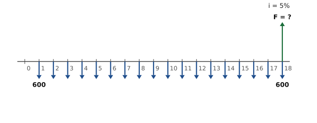
مخطط التدفق النقدي
الحل:
في Excel:
=FV(5%, 18, -600)
مجموع ما أودعه الأب 10,800.00 دينار، والباقي 6,079.43 دينار فوائد.
2.5 الإيداع السنوي لهدف مستقبلي
تعرف المبلغ الذي تحتاجه في المستقبل، وتريد الإيداع السنوي الذي يوصلك إليه. هذا مقلوب المعامل F/A:
بين المعاملين A/P وA/F علاقة مفيدة للتحقق:
مثال 2.7: ادخار لسداد دين مستقبلي
على شخص دين 10,000 دينار يستحق بعد 3 سنوات. يريد أن يودع مبلغا متساويا في نهاية كل سنة في حساب يعطي 8%، حتى يجمع مبلغ الدين. كم يودع سنويا؟
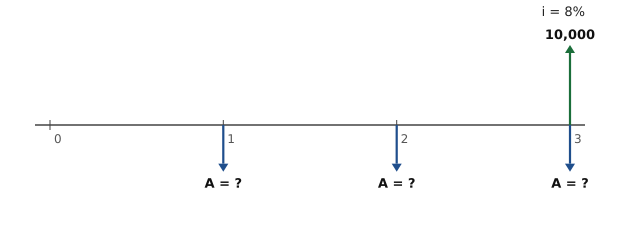
مخطط التدفق النقدي
الحل:
في Excel يكتب المبلغ في المدخل الرابع لأنه قيمة مستقبلية:
=PMT(8%, 3, 0, -10000)
يودع 3,080.34 دينار سنويا.
مثال 2.8: ادخار للتقاعد
يريد موظف أن يجمع 800,000 دينار عند تقاعده بعد 20 سنة. كم يجب أن يدخر سنويا إذا كان العائد 3%؟
الحل:
=PMT(3%, 20, 0, -800000)
يدخر 29,772.57 دينار سنويا. لو استخدمنا المعامل مقربا لأربع خانات لحصلنا على 29,760.00 دينار، بفرق 12.57 دينار. عندما يكون المعامل صغيرا والمبلغ كبيرا يكبر أثر التقريب، فاستخدم القانون أو Excel.
ملخص المعاملات الستة
المعامل
تعرف
تريد
دالة Excel
F/P
P
F
FV
P/F
F
P
PV
A/P
P
A
PMT
P/A
A
P
PV
F/A
A
F
FV
A/F
F
A
PMT
في الدوال الثلاث FV وPV وPMT، المدخل الثالث للدفعة السنوية، والرابع لمبلغ مفرد في السنة 0 أو في السنة n. ضع 0 في المدخل الذي لا تحتاجه.
2.6 السلاسل المؤجلة والمركبة
كثير من المسائل لا تأتي بالشكل الأساسي: السلسلة تبدأ بعد سنوات، أو تتوقف قبل نهاية الدراسة، أو معها مبالغ مفردة. القاعدة واحدة: استخدم المعامل على السلسلة كما هي، ثم انقل النتيجة.
المعامل P/A يضع القيمة في السنة التي قبل الدفعة الأولى.
المعامل F/A يضع القيمة في سنة الدفعة الأخيرة.
مثلا، إذا بدأت السلسلة في السنة 4، فالمعامل P/A يعطي القيمة في السنة 3، وتنقلها إلى السنة 0 بالمعامل P/F لمدة 3 سنوات.
مثال 2.9: سلسلة تبدأ متأخرة
يستلم شخص 2,000 دينار سنويا من نهاية السنة 4 حتى نهاية السنة 10. ما القيمة الحالية لهذه الدفعات إذا كانت الفائدة 8%؟
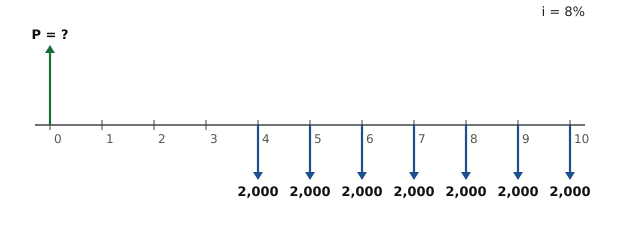
مخطط التدفق النقدي
الحل:
عدد الدفعات 7، من السنة 4 إلى السنة 10. المعامل P/A يضع القيمة قبل الدفعة الأولى بسنة، أي في السنة 3:
ثم ننقلها إلى السنة 0:
في Excel:
=PV(8%, 3, 0, -PV(8%, 7, -2000))
أكثر خطأ يقع فيه الطلاب هنا: نقل القيمة 4 سنوات بدل 3 سنوات.
مثال 2.10: ادخار ثم انتظار
أودعت مهندسة 3,000 دينار في نهاية كل سنة لمدة 6 سنوات، ثم توقفت عن الإيداع وتركت الرصيد 4 سنوات أخرى. كم يصبح الرصيد في النهاية بفائدة 6%؟
الحل:
المعامل F/A يعطي الرصيد في السنة 6، مع الإيداع الأخير:
ثم ينمو الرصيد وحده 4 سنوات:
=FV(6%, 4, 0, -FV(6%, 6, -3000))
مثال 2.11: توفير سنوي وقيمة بيع في النهاية
آلة سعرها 45,000 دينار، توفر 11,000 دينار سنويا لمدة 6 سنوات، وتباع في النهاية بمبلغ 6,000 دينار. هل تستحق الشراء بحد أدنى للعائد 10%؟
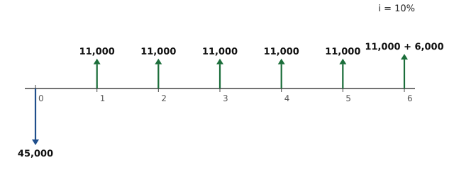
مخطط التدفق النقدي
الحل:
نجمع القيمة الحالية للتوفير وقيمة البيع، ونطرح السعر:
في Excel تضع الدالة PV الدفعة السنوية وقيمة البيع معا:
=-45000 + PV(10%, 6, -11000, -6000)
الآلة تستحق الشراء.
دفعات في بداية السنة
الإيجار والرسوم الدراسية والتأمين تدفع غالبا في بداية السنة. السلسلة عندها تبدأ في السنة 0 وتنتهي قبل السنة الأخيرة بسنة. لا تحتاج قانونا جديدا: الدفعة الأولى في السنة 0 تبقى كما هي، والباقي سلسلة عادية.
مثال 2.12: إيجار يدفع في بداية كل سنة
يستأجر مكتب هندسي مقرا بمبلغ 9,000 دينار سنويا لمدة 5 سنوات، والإيجار يدفع في بداية كل سنة. ما القيمة الحالية للإيجار بفائدة 7%؟
الحل:
الدفعة الأولى في السنة 0، والباقي 4 دفعات من السنة 1 إلى السنة 4:
في Excel المدخل الخامس للدالة PV يحدد موعد الدفعة: 1 يعني بداية السنة.
=PV(7%, 5, -9000, 0, 1)
لو كان الإيجار في نهاية كل سنة، لكانت القيمة الحالية 36,901.78 دينار. الدفع المبكر يرفع القيمة الحالية.
إيجاد عدد السنوات ونسبة الفائدة
إذا كان المجهول n، تحله بالدالة NPER أو باللوغاريتم. إذا كان المجهول i، فلا يوجد حل جبري، وتستخدم الدالة RATE أو التجربة في الجداول. الفصل الرابع يشرح طريقة التجربة بالتفصيل.
مثال 2.13: كم سنة حتى يسدد القرض؟
اقترض شخص 20,000 دينار بفائدة 8%، ويستطيع أن يدفع 3,000 دينار سنويا. كم سنة يحتاج ليسدد القرض؟
الحل:
نحل معادلة القيمة الحالية لإيجاد n:
في Excel:
=NPER(8%, -3000, 20000)
يحتاج 9 سنوات كاملة ودفعة أخيرة أصغر في السنة 10.
ملاحظة: إذا كانت الدفعة السنوية أقل من فائدة السنة الأولى، أي أقل من 1,600.00 دينار، فلن يسدد القرض أبدا.
مثال 2.14: عائد استثمار بإيرادات متساوية
يستثمر شخص 25,000 دينار ويستلم 7,000 دينار سنويا لمدة 5 سنوات. ما نسبة العائد؟
الحل:
نبحث عن النسبة التي تجعل القيمة الحالية للإيرادات تساوي الاستثمار:
لا يوجد حل جبري لهذه المعادلة. باليد تبحث في جدول P/A في عمود 5 عن نسبتين حول 3.5714 ثم تستكمل خطيا، وهذا موضوع الفصل الرابع. في Excel:
=RATE(5, 7000, -25000)
وفي Python:
import numpy_financial as npfprint(round(npf.rate(5, 7000, -25000, 0), 4))
2.7 الدفعات المتدرجة خطيا
في هذه السلسلة تزيد الدفعة كل سنة بمقدار ثابت G. الدفعة في السنة t هي:
تكاليف صيانة آلة تتقادم مثال شائع.
نقسم السلسلة إلى جزأين: سلسلة ثابتة قيمتها A1، وسلسلة متدرجة تبدأ بصفر في السنة 1 ثم G في السنة 2 ثم 2G في السنة 3:
ولتحويل السلسلة كلها إلى دفعة سنوية متساوية:
إذا كانت الدفعة تقل كل سنة، فالمقدار G سالب والقانون نفسه.
مثال 2.15: تكاليف صيانة تزيد كل سنة
تكلفة صيانة آلة في مصنع 1,500 دينار في السنة الأولى، وتزيد 300 دينار كل سنة لمدة 8 سنوات. نسبة الفائدة 10%. (أ) ما القيمة الحالية لتكاليف الصيانة؟ (ب) ما التكلفة السنوية المتساوية المكافئة؟
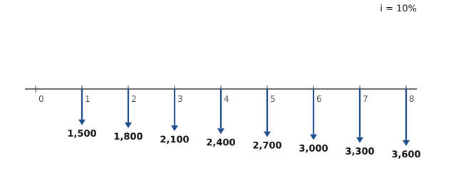
مخطط التدفق النقدي
الحل:
نقسم السلسلة إلى جزأين: سلسلة ثابتة 1,500 دينار، وسلسلة متدرجة تبدأ بصفر في السنة 1 ثم 300 في السنة 2 وهكذا.
(أ)
(ب)
التكلفة تبدأ بـ 1,500 دينار وتنتهي بـ 3,600 دينار. توزيعها بالتساوي يكافئ 2,401.34 دينار سنويا.
لا توجد في Excel دالة جاهزة للتدرج. اكتب التكاليف في عمود من B2 إلى B9، ثم:
=NPV(10%, B2:B9)
مثال 2.16: إيرادات تقل كل سنة
إيرادات منتج 20,000 دينار في السنة الأولى، وتقل 1,500 دينار كل سنة لمدة 6 سنوات. ما القيمة الحالية للإيرادات بنسبة 9%؟
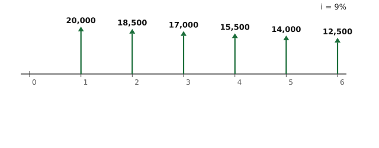
مخطط التدفق النقدي
الحل:
التدرج هنا سالب، فنطرح الجزء المتدرج:
الإيراد في السنة الأخيرة 12,500 دينار.
مثال 2.17: تدرج يبدأ بعد سنوات
تكاليف تشغيل خط جديد تبدأ في نهاية السنة 3 بمبلغ 1,000 دينار، وتزيد 200 دينار كل سنة، وتستمر 6 سنوات. ما قيمتها الحالية بنسبة 8%؟
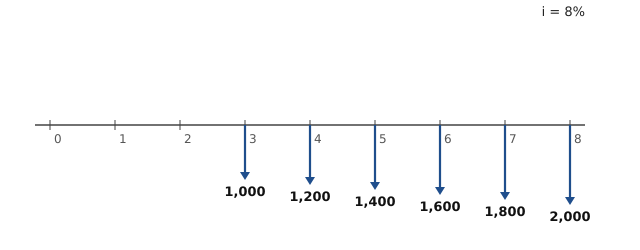
مخطط التدفق النقدي
الحل:
معاملا P/A وP/G يضعان القيمة قبل الدفعة الأولى بسنة، أي في السنة 2:
لمن يريد أن يستزيد: اشتقاق المعاملين P/G وA/G خطوة بخطوة في ملحق اشتقاق المعادلات، Section B.5.
2.8 الدفعات المتدرجة نسبيا
في هذه السلسلة تزيد الدفعة كل سنة بنسبة ثابتة g. الدفعة في السنة t هي:
الرواتب وأسعار الطاقة أمثلة شائعة.
مثال 2.18: تكلفة كهرباء ترتفع بنسبة ثابتة
تكلفة الكهرباء في ورشة 4,000 دينار في السنة الأولى، ويتوقع أن ترتفع 6% سنويا لمدة 10 سنوات. ما القيمة الحالية لتكاليف الكهرباء بنسبة 10%؟
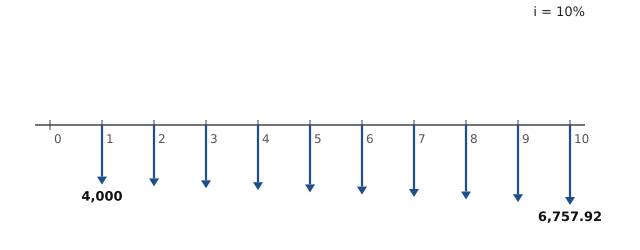
مخطط التدفق النقدي
الحل:
التكلفة في السنة الأخيرة 6,757.92 دينار. لا توجد جداول لهذا المعامل لأن فيه متغيرا ثالثا. في Excel اكتب الصيغة التالية في الخلية B2 واسحبها حتى السنة 10، ثم استخدم NPV:
=4000*(1+6%)^(A2-1)
مثال 2.19: عندما تتساوى نسبة النمو ونسبة الفائدة
دفعة سنوية تبدأ بـ 5,000 دينار وتزيد 8% سنويا لمدة 6 سنوات. ما قيمتها الحالية إذا كانت الفائدة أيضا 8%؟
الحل:
القانون العام يقسم على صفر عندما تتساوى النسبتان. في هذه الحالة كل دفعة تكافئ في السنة 0 نفس المبلغ:
فالقيمة الحالية:
لمن يريد أن يستزيد: اشتقاق معادلة السلسلة المتدرجة نسبيا، والحالة التي تتساوى فيها النسبتان، في ملحق اشتقاق المعادلات، Section B.6.
2.9 تدفقات غير منتظمة
عندما لا تتبع التدفقات أي نمط، اكتبها في عمود واحسب قيمتها الحالية بالدالة NPV. هذه الطريقة تعمل مع كل الحالات السابقة أيضا، ولذلك هي الطريقة العملية في الشركات.
مثال 2.20: تدفقات غير منتظمة بالدالة NPV
مشروع يكلف 50,000 دينار، وإيراداته 12,000 دينار في السنة 1، و15,000 دينار في كل من السنوات 2 و3 و4، و20,000 دينار في السنة 5. ما صافي القيمة الحالية بنسبة 10%؟
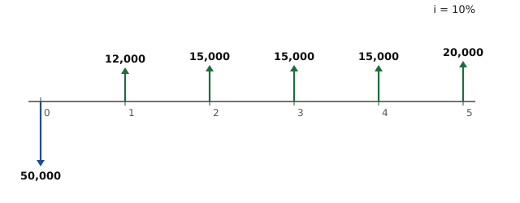
مخطط التدفق النقدي
الحل:
نستطيع الحل بالمعاملات: السنوات 2 إلى 4 سلسلة متساوية، المعامل P/A يضع قيمتها في السنة 1:
الطريقة الأسهل في Excel: اكتب التدفقات في الخلايا من B1 إلى B6. الدالة NPV تبدأ من السنة 1، فتدفق السنة 0 يجمع خارجها:
انتبه لفرق مهم: الدالة NPV في Excel تفترض أن أول قيمة في النطاق في السنة 1، أما الدالة npv في numpy_financial فتفترض أن أول قيمة في السنة 0.
2.10 Python: جدول إطفاء قرض
حلقة تكرار تبني جدول الإطفاء سنة بسنة. غير المدخلات في أول سطرين لأي قرض:
import numpy_financial as npfP, i, n =30000, 0.08, 5A = npf.pmt(i, n, -P)balance = Pprint("year interest principal balance")for year inrange(1, n +1): interest = balance * i principal = A - interest balance = balance - principalprint(f"{year:4d}{interest:9.2f}{principal:10.2f}{balance:9.2f}")
2.24 معرض يعرض سيارة بمبلغ 15,000 دينار نقدا، أو 4,000 دينار سنويا لمدة 5 سنوات. ما المعامل P/A الذي يجعل العرضين متساويين؟ وما الدالة التي تعطي نسبة الفائدة؟
2.29 مشروع يكلف 40,000 دينار ويعطي 7,000 دينار سنويا لمدة 10 سنوات. قارن الإيراد السنوي بالتكلفة السنوية المكافئة للاستثمار بنسبة 10%. هل المشروع مقبول؟
2.39 أخوان يدخر كل منهما 2,500 دينار سنويا بعائد 7%. الأول يدخر في أول 10 سنوات ثم يتوقف ويترك رصيده، والثاني يبدأ بعد 10 سنوات ويدخر 10 سنوات. من رصيده أكبر في نهاية السنة 20؟
2.58 يريد شخص أن يجمع 40,000 دينار بعد 10 سنوات. سيودع 2,500 دينار سنويا، ويريد أن يودع مبلغا إضافيا اليوم ليصل إلى الهدف. كم المبلغ الإضافي بفائدة 6%؟
2.64 تكلفة تشغيل شاحنة 2,000 دينار في السنة الأولى، وتزيد 250 دينار كل سنة لمدة 10 سنوات. نسبة الفائدة 8%. أوجد القيمة الحالية والتكلفة السنوية المكافئة.
2.66 سلسلة متدرجة فقط: صفر في السنة 1، و500 في السنة 2، وتزيد 500 كل سنة حتى السنة 5. احسب قيمتها الحالية بالمعامل P/G، ثم بنقل كل دفعة وحدها. الفائدة 10%.
2.69 خياران لصيانة مبنى: عقد بقيمة ثابتة 8,000 دينار سنويا، أو دفع التكلفة الفعلية التي تبدأ بـ 5,000 دينار وتزيد 500 كل سنة. المدة 6 سنوات والفائدة 8%. أي الخيارين أرخص؟
2.78 يريد صاحب مشروع أن يبدأ رواتب موظف بـ 3,000 دينار في السنة الأولى، ويزيدها مبلغا ثابتا كل سنة لمدة 8 سنوات، بحيث تكافئ راتبا ثابتا 5,000 دينار بنسبة 10%. ما الزيادة السنوية؟
2.82 تكلفة تشغيل محطة ضخ 12,000 دينار في السنة الأولى، وترتفع 4% سنويا لمدة 15 سنة. ما القيمة الحالية، وما التكلفة السنوية المتساوية المكافئة بنسبة 8%؟
2.83 إيرادات متجر إلكتروني 10,000 دينار في السنة الأولى، وتنمو 10% سنويا لمدة 5 سنوات. ما قيمتها الحالية بنسبة 6%؟ لاحظ أن نسبة النمو أكبر من نسبة الفائدة.
2.88 عرض عمل براتب ثابت 5,000 دينار سنويا لمدة 10 سنوات، وعرض آخر يبدأ بـ 4,000 دينار ويزيد بنسبة ثابتة. ما نسبة الزيادة التي تجعل العرضين متساويين بفائدة 8%؟ استخدم Goal Seek في Excel.
حل هذه المسائل بجدول في Excel أو ببرنامج Python، وليس باليد.
2.89 ابن جدول إطفاء في Excel لقرض 30,000 دينار بفائدة 8% لمدة 5 سنوات، بأعمدة السنة والرصيد في البداية والفائدة والقسط وسداد الأصل والرصيد في النهاية. ما الرصيد بعد كل سنة؟
2.98 قرض 80,000 دينار بفائدة 9% لمدة 8 سنوات. البنك يعرض أن يدفع المقترض نصف القسط العادي في أول سنتين، ثم قسطا ثابتا في السنوات من 3 إلى 8. ابن الحل في Excel بالدالة Goal Seek، وتحقق بالقانون.
2.106 سلسلة تبدأ بـ 5000 دينار وتزيد 5% سنويا، والفائدة 5%. أي العبارات صحيحة؟
أ) القانون العام يعطي الجواب مباشرة
ب) القيمة الحالية تساوي n مضروبة في 5000 مقسومة على 1.05
ج) القيمة الحالية تساوي n مضروبة في 5000
د) لا يمكن حساب القيمة الحالية
2.109 في Excel كتب طالب الصيغة التالية لحساب القيمة الحالية لتدفقات في السنوات من 0 إلى 5 مكتوبة في الخلايا من B1 إلى B6. ما الخطأ؟
=NPV(10%, B1:B6)
أ) لا يوجد خطأ
ب) الدالة تعامل تدفق السنة 0 كأنه في السنة 1، فتخصم كل التدفقات سنة زائدة
ج) يجب كتابة النسبة 0.1 بدل 10%
د) الدالة NPV لا تقبل قيما سالبة
كل حالة تجمع أكثر من فكرة من الفصل، وبعضها يضيف فكرة جديدة.
2.111حالة 2.1: قرض سيارة بدفعة أخيرة كبيرة
يريد مهندس شراء سيارة بقرض 30,000 دينار بفائدة 8% لمدة 5 سنوات. عرض عليه البنك خطتين:
الخطة العادية: أقساط سنوية متساوية.
خطة الدفعة الأخيرة الكبيرة (balloon): أقساط سنوية متساوية أصغر، ثم دفعة إضافية 10,000 دينار مع القسط الأخير.
(أ) ما القسط في كل خطة؟ (ب) ما مجموع الفوائد في كل خطة؟ لماذا تختلف؟ (ج) ما رصيد القرض بعد القسط الثالث في كل خطة؟ (د) في نهاية السنة 5 لم يجد المهندس 10,000 دينار، فأعاد البنك تمويلها بقرض جديد بفائدة 10% لمدة 3 سنوات. ما القسط الجديد؟ (هـ) هل الخطة الثانية أرخص فعلا بنسبة 8%؟
يدرس مصنع تركيب ألواح شمسية بتكلفة 95,000 دينار. التوفير في فاتورة الكهرباء في السنة الأولى 14,000 دينار. سعر الكهرباء يرتفع 5% سنويا، وإنتاج الألواح يقل 0.7% سنويا بسبب التقادم. الصيانة 1500 دينار في السنة الأولى وتزيد 100 دينار كل سنة. عمر النظام 20 سنة، والحد الأدنى للعائد 9%.
(أ) التوفير يتأثر بنسبتين: ارتفاع السعر وانخفاض الإنتاج. ما نسبة النمو الواحدة التي تجمعهما؟ (ب) ما القيمة الحالية للتوفير؟ (ج) ما القيمة الحالية للصيانة؟ (د) هل المشروع مقبول؟ (هـ) ما أعلى سعر يدفعه المصنع للنظام؟ (و) ما التوفير المتوقع في السنة العشرين؟
موظفة عمرها 30 سنة، راتبها السنوي 12,000 دينار ويزيد 3% سنويا. تدخر 10% من راتبها في نهاية كل سنة لمدة 25 سنة، بعائد 6%. بعد التقاعد تريد سحب مبلغ ثابت كل سنة لمدة 20 سنة.
(أ) كم تدخر في السنة الأولى؟ (ب) كم يصبح رصيدها عند التقاعد؟ (ج) كم تسحب سنويا إذا كان السحب في نهاية كل سنة؟ (د) كم تسحب إذا كان في بداية كل سنة؟ (هـ) لو بقي الادخار ثابتا عند مبلغ السنة الأولى، كم ينقص السحب السنوي؟